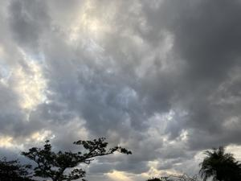

うるがいの話 ある日
最新: 新しいAI【うるがいの話 ある日】とは 一日だけのプログです
『うるがいの話』の最新一日だけのプログで、通信料が少なく経済的だ。カニの画像をクリックすると全ての日付が載る『うるがいの話』サイトを表示します
|
|
【うるがいの話】 うるがい(ｳﾙｶﾞｲ urugai)とは、『もずくがに』の名前でとても大きくなります。 |
|---|---|
|
|
【カミマヤーの話】 猫のことを方言でマヤーといいます。カミマヤー（kamimayaa）とは、神の猫のことです。 |
|
【たながぁの音楽】 たながぁ（ﾀﾅｶﾞｰ tanagaa）とは手長えびのことで、何種類かあり大きいのは車 エビぐらいになります。 |

|
【ぶながぁの話】 ぶながぁ(ﾌﾞﾅｶﾞｰ bunagaa)とは、赤い髪の毛、赤い身体、そして身長は１ｍ２０ｃｍ ぐらい、川の蟹を食べているの目撃された。場所は沖縄県国頭郡大宜味村のと ある村僕の隣近所に住んでいる爺さんから、聞いた話です。 |
|
|
【ギーマの話】 ギーマ(giima)とは、山原の里山に咲くスズランに似た、 花を付けます。実は食べられます、 気が付くと口の周りが紫になっています。 |
2026年01月29日 (木）新しいAI
16:04

高性能パソコンのＣドライブの空き領域が、少なくなってきまし
た。半年前の９月に、ＯｎｅＤｒｉｖｅが満杯になった出来事で
２２ギガ程度だったのが４９．６ギガに大幅に増えたのに、いつ
のまにか、２３ギガに戻った。ファイルを整理しても、空き領域
は増えそうにありません。そもそも、購入時のデフォルトのＣド
ライブの領域が、２２０ギガと少ない！のですよ。
で、そろそろ何とかしなくてはと調べ始め。トだ、高性能のＳＳ
Ｄは、どうも新しいタイプのメモリＭ．２ ＳＳＤというものら
しい。私が、交換ようと準備できるＳＳＤが利用できるか、心配
になった。で、ユーチューブ動画を調べると、Ｐｅｒｐｌｅｘｉ
ｔｙ（パープレキシティ）というＡＩを利用すればいいと分かる
。で、やってみた。結論から言うと大丈夫のようだ。

近々、実践してみようと思う。
Perplexityとは、機械学習技術と自然言語処理を使用した対話
形式のAI検索エンジンです。
Perplexityの大きな特徴のひとつは、ファイルをアップロード
できることです。アップロードしたファイルの内容をAIが読み
取って、要約や翻訳、内容に関する質問への回答も可能です
私は、ＰＣ３のバージョン情報をアップロードしました。なお
Ｍ．２ ＳＳＤを購入すると、２万円以上もする！！。